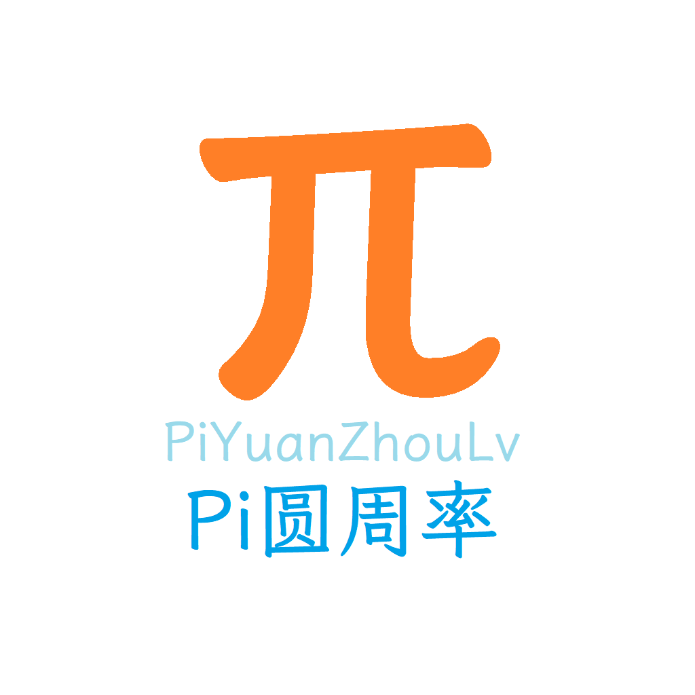
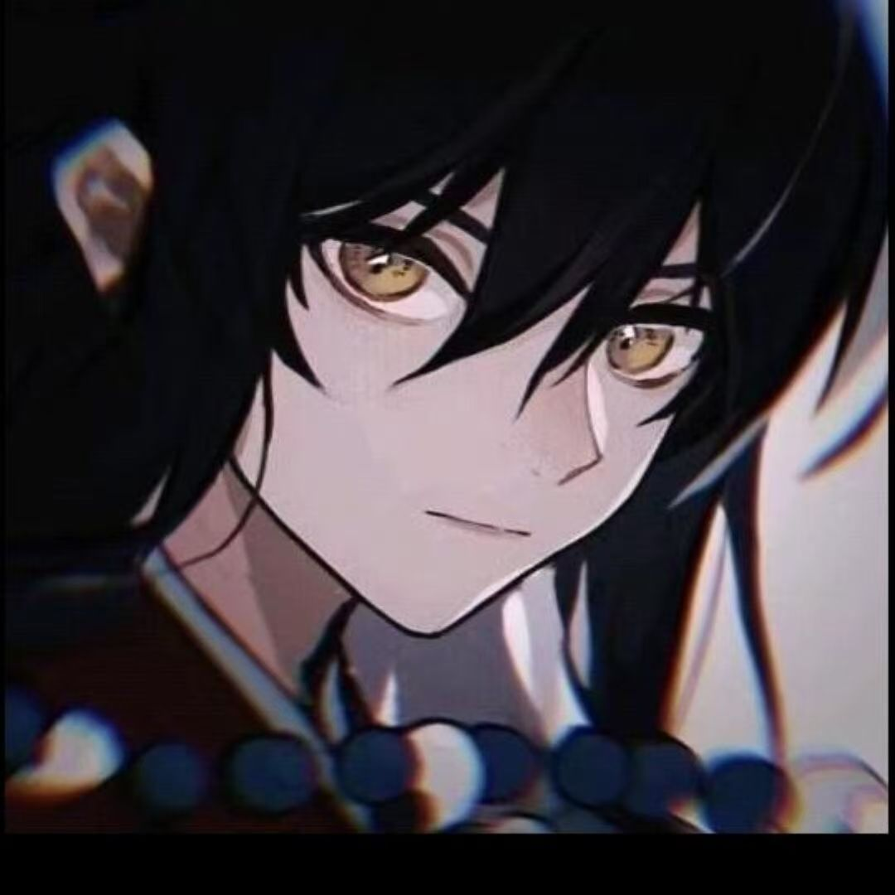
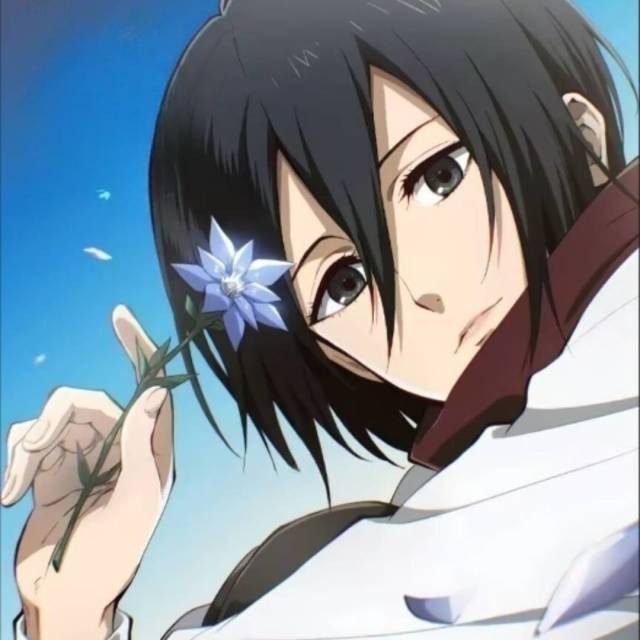

圆周率的废纸堆 圆周率的废纸堆，里面或许有你需要的？
00067 就是这个人很懒没什么介绍的（）
butt3rf1y 超级无敌nn姐 huaji 无敌大手子滑稽 圣赵的小站 Zealous Knowledge Seeker「心怀热忱，知行合一」 Lochad Pwn最区的区 mio 喵喵喵？
友链格式
title: CQ
intro: 什么都会点 什么都菜点的re玩家
link: https://your-name.github.io/
avatar: /assets/avatar.jpg